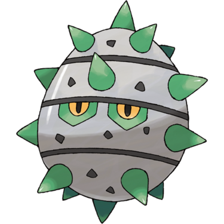
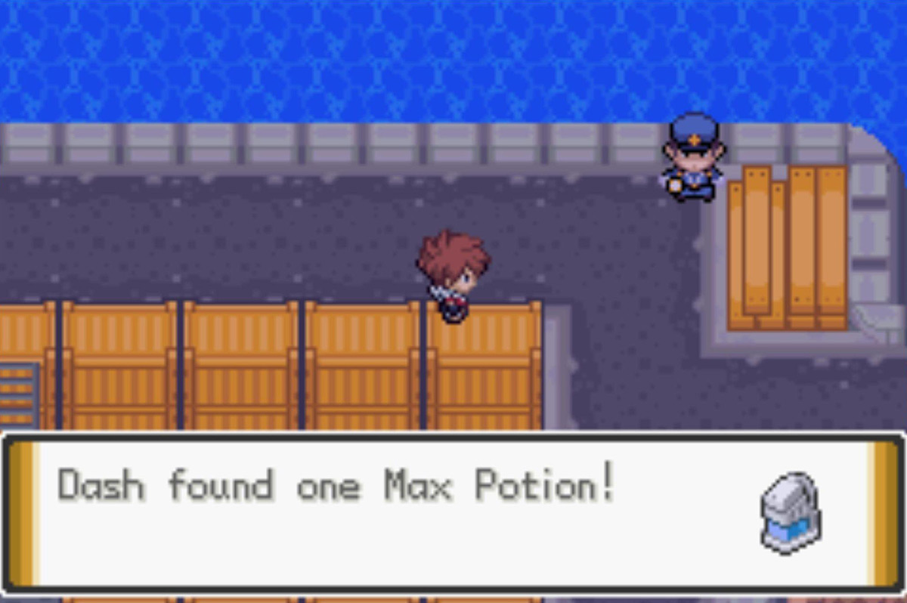
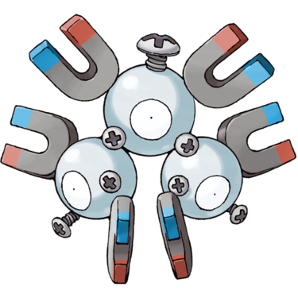
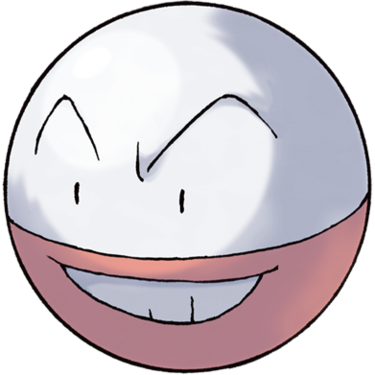

Quick Guide:
- Enter Antisis City
- Survive the Mean Streets and visit the Black Emboar HQ
- Assist a Smuggling Operation
- Defend Black Emboar Turf
- Take Down a Mad Scientist via Supply and Demand
Antisis City
{kind=link}
| Points of Interest | |
|---|---|
 |
Pokémon Center |
 |
Science Society House |
 |
Black Emboar Goon |
 |
Poke Mart |
 |
Black Emboar HQ |
 |
Antisis Storage |
 |
Black Ferrothorn Goon |
 |
Eerie House |
 |
Black Ferrothorn HQ |
 |
Antisis Gym |
| Former Terror Granbull House | |
| Exits and Passages | |
|---|---|
 |
(west) KBT Expressway |
|
(northwest) Antisis West Gate, Route 16 |
|
(northeast) Antisis East Gate, Route 16 |
 |
Thundercap Mountain, Antisis Side |
 |
Antisis Port |
Items
| Items | |
|---|---|
| Zygarde Cell | |
| PP Up | |
Wild Pokémon
| Wild Pokémon | |
|---|---|
| Surfing | |
|
Tentacool Water/Poison |
 |
|
Tentacruel Water/Poison |
 |
|
Pelipper Water/Flying |
 |
|
Mantyke Water/Flying |
 |
| Fishing | |
|
Magikarp Water (Old Rod) |
 |
|
Horsea Water (Good Rod) |
 |
|
Remoraid Water (Good Rod) |
 |
|
Seadra Water (Super Rod) |
 |
|
Octillery Water (Super Rod) |
 |
|
Gyarados Water/Flying (Super Rod) |
 |
Trainers
| Trainers | |
|---|---|
| Roughneck Corey | |
|
Weezing Poison (Lv.49) |
|
| Black Ferrothorn Goon | |
|
Ferroseed Grass/Steel (Lv.49) |
 |
In order to get the Antisis Gym badge, you’ll have to enter Antisis City first, and it’s pretty rough and dangerous by all accounts.
From the gate, walk south.
Keep heading down the street until you see the Pokémon Center on your right – then head towards it (it should be the second street you pass).
There are two types of goons out and about in Antisis City.
Those that wear green are members of the Black Ferrorthorn, which is the gang you saw harassing Mirskle back in the Dresco Gym.
The ones in red should look familiar too – they’re James’ gang, formerly known as the Black Emboar, before you beat them in Crater Town. They’re now named the “Black [YOUR NAME]”, but for clarity’s sake they’ll continue to be referred to as the Black Emboar here.
Right in front of the Pokémon Center is a Black Emboar goon on a bike. Apparently he doesn’t recognize you, and is itching for a fight!
After you beat him, he’ll be sufficiently humbled.
There’s no Nurse at the Pokémon Center, and hence no free healing service.
You’ll have to fork over P500 every time you want to have your Pokémon healed up in Antisis.
Right next to the Center is the house of a member of the Science Society, and she appears to be up to no good.
She’s selling ‘enhancers’ to gang thugs, but won’t give any to us. We’ll be seeing her a bit later.
The northwest corner of town, at the water level, has an entrance to the Expressway – but it’s been cut off from the rest of the system because of how dangerous Antisis is.
There is one Gem Family member here that might be useful though.
| Gem Family Move Shops | ||
|---|---|---|
|
Fighting Aura Sphere 3 Fighting Gems |
 |
Antisis City section |
On the bridge is a Black Ferrothorn goon who will challenge you to a fight if you speak to him. Continue past him going south and you’ll see a house on the western side of the city island.

Inside this house is a very odd person with a very odd request.
If you show him a Pokémon that knows the move Eerie Impulse, he’ll give you TM107 Acrobatics.
The Electrode you traded for in Blizzard City can learn Eerie Impulse by leveling up, as well as Pokémon such as Voltorb and Lanturn.
There’s a building just east of here with a Black Ferrothorn goon guarding the entrance – this is their headquarters, and you can’t go in just yet.
The Gym is also near here, but you aren’t quite ready to take it on.
The southeast section of town has two things – a small house, and the entrance to Antisis Port. You’ll be going to the Port later, but for now head inside the house.
One of the Terror Granbull is here, but he’s retired and living with his mother. He gives you a Max Potion as a gift to leave him alone.
Next to the Poke Mart is a large building with a note on the front of it – it’s the Antisis headquarters of the Black Emboar.
James said you should come and see him if you’re ever in Antisis, so head on inside.
Black Emboar HQ
As soon as you go in, James welcomes you into the group and tells you that they’re having trouble fitting in with the city. Their ultimate goal is to take down the Black Ferrothorns, but they’re not quite there yet.
Talk to various members of the gang and do their missions, and the standing of the Emboar will improve.
The first mission you can get is a pretty disgusting one – the gang member in front of the television on the ground floor has lost his socks in the sewers.
You’ll be going to the sewers later, so this one can be put on pause for now.
The other gang member with a mission for us on this floor is looking for a person to help smuggle goods through Antisis Port, which is pretty much the only place in town with any law and order.
You’ll have to go there after 8PM, but you don’t have to wait for the real world time to match up.
Just change your system clock accordingly – an old trick, but a good one.
Antisis Port
{kind=link}
| Points of Interest | |
|---|---|
|
Officer McGuinty |
|
Officer Holt |
|
Officer Peralta |
|
Black Emboar Goon Location |
| Exits and Passages | |
|---|---|
|
Antisis City |
Items
| Items | |
|---|---|
|
Throat Spray (gate opens 6pm) |
|
|
Max Potion (gate opens 9am) |
 |
|
Galladite (hidden) (gate opens 12pm) |
|
|
Assault Vest (gate opens 12pm) |
|
Trainers (night)
|
Trainers (only at night) |
|
|---|---|
| Officer McGuinty | |
|
Noctowl Water (Lv.49) |
 |
|
Stoutland Normal (Lv.50) |
 |
|
Machoke Fighting (Lv.49) |
 |
| Officer Holt | |
|
Arcanine Fire (Lv.50) |
 |
| Officer Peralta | |
|
Mienshao Fighting (Lv.50) |
 |
|
Lucario Fighting/Steel (Lv.50) |
|
|
Magneton Electric/Steel (Lv.49) |
 |
On your way through the gatehouse, you’ll be asked to show some ID, which you’ve got. The port is crawling with guards waiting for the excuse to catch criminals.
During the day, the three guards will ignore you.
But at night they’ll challenge you to a battle.
The items found in the crate area are also time-sensitive, because the different boom gates and barriers open at different times.
Head to the northeast pier and you’ll find your contact waiting for you.
Apparently you’re waiting for some ‘Rose Incense’, but that doesn’t sound illegal.
After a little bit of waiting, a ship arrives, along with a familiar face.
The Dresco Gym leader and mysterious Fog lover Mirskle gives you the shipment, then quickly sails off.
Unfortunately, you’re caught by some members of the Black Ferrothorn who want to turn us in to curry favor with the guards.
| Port Battle | |
|---|---|
| Black Ferrothorn Goon A | |
|
Ferroseed Grass/Steel (Lv.41) |
|
| Black Ferrothorn Goon B | |
|
Escavalier Bug/Steel (Lv.49) |
 |
While you were busy battling the goons, your contact went to alert the guard and get them arrested, which caps things off nicely.
He hid the package – revealed to be illegal Oddish Leaves – on the western side of the crate area, opposite the lighthouse.
Pick up the package and attempt to go through the gatehouse.
The guard is suspicious, because he can smell something, but he lets you pass eventually.
When you get back to the gang HQ, your contact rewards you with Dream Mist and tells you that Mirskle in Dresco Town will make you more if you give him any Oddish you’ve caught.
Further Missions
A Minor Scrap

Head upstairs and the first goon that you’ll see has a mission for you. He will ask you to take care of a couple of Ferrothorn on the eastern bridge.
No need to go there yourself, he’ll take you there.
The first stage of this battle begins with one goon at first, and then when you beat him it turns into a Double Battle with the other goon as well.
They also use the mysterious enhancers the scientist makes on their Pokémon.
| Turf War Battle | |
|---|---|
| Black Ferrothorn Rory | |
|
Weezing Poison (Lv.48) |
|
|
Muk Poison (Lv.49) |
|
|
Ferroseed Grass/Steel (Lv.47) |
|
|
Krokorok Ground/Dark (Lv.49) |
|
| Black Ferrothorn Rory and Black Ferrorthorn Chad | |
|
Weezing Poison (Lv.48) |
|
|
Muk Poison (Lv.49) |
|
|
Ferrothorn Grass/Steel (Lv.47) |
|
|
Krookodile Ground/Dark (Lv.49) |
 |
The Power Bracer is your gift for getting rid of those thugs.
Head over to the room with all the beds in it to get the next mission.
Supply and Demand
This goon wants you to stop the supply of the enhancers the Ferrothorn are getting, and that means dealing with the scientist who lives next to the Pokémon Center.
The Scientist’s House
Head over there and go on inside.
Unfortunately for you and the goon, the scientist is protected by a top-of-the-line exploding Electrode security system.
One wrong step and you’ll be knocked unconscious and have to try again.
Here’s the exact puzzle solution:
Step on the floor in this exact sequence:
- Two steps west
- One step north
- One step west
- Two steps north
- One step east
- One step north
- Five steps east
- Three steps south
- One step west

Speak to the scientist, and she’ll be confused as to how you even got to her.
However, she has more exploding Electrode to throw at you, this time in a battle.
| Science Society Scientist | |
|---|---|
|
Electrode Fighting (Lv.49) |
 |
|
Electrode Fighting (Lv.49) |
|
|
Electrode Fighting (Lv.49) |
|
Eventually, she falls victim to one of her own traps and is knocked out.
Take the enhancers from the windowsill and hand them to the goon – he’ll go with you back to HQ.
Make sure you have an empty space in your party, then talk to him.
Apparently the scientist made the enhancers from Pokémon, and one of their Eggs was left behind.
You’ll get the egg and you’ll now be the owner of your very own baby Alolan Grimer.
| Egg Pokémon | |
|---|---|
|
Alolan Grimer Poison/Dark (Lv.1) |
|
The Next Mission
There’s only one mission to complete for the Black Emboar left, and that’s the socks mission.
Luckily, there’s an entrance to the sewers right in the back of their HQ, so head there next.